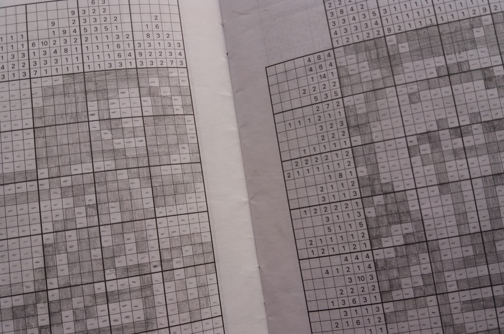

Get to know me
I am a motivated and creative student, who likes to challenge himself. I also enjoy a little competition, and combined with my broad interest this makes me the perfect person for you to challenge, whenever you come across a problem, anywhere from programming to linguistics and from cryptography to logistics.
My characteristics are organized, hard-working, eager to learn new things and critical, not in the least when it comes to writing. In my spare time, I like to cook, go for a run, study the basics of a foreign language, or continue working on my family tree with 10,000+ persons.


Have you ever wondered whether some random person you come across might be related to you? Personally, I don't know most of my second cousins, let alone third cousins or relatives whom I share an ancestor with some more generations back in time. Yet, there must be many people I am related to, considering the number of ancestors a person has exponentially increases as we go back in time. Together, these ancestors probably have a lot of descendants nowadays, who are all related to each other. What is the probability someone you meet on the street shares an ancestor with you?

When I have a couple of minutes to spare, I like to grab my phone and solve a nonogram or two, also known as Japanese crosswords. The goal is never to solve the puzzle itself, but I rather enjoy the process and use it as a means of relaxation. Recently, I started wondering whether I could write some code which could solve nonograms. I went ahead, and in fact it only took me one Friday night to solve ‘easy’ instances.